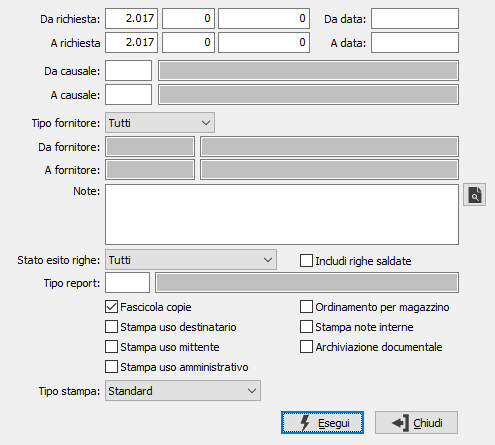

Stampa richieste di offerta
Il programma attiva la stampa differita o la ristampa delle richieste di offerta, sulla base dei parametri di selezione inseriti dall’utente.
E’ possibile determinare la stampa completa delle richieste di offerta selezionate, oppure la stampa dei soli prodotti da evadere.
E’ infine possibile inserire interattivamente una annotazione che verrà stampata sui moduli di richiesta di offerta.

DA RICHIESTA: tre campi per contenere rispettivamente anno, serie sezionale e numero del documento da cui si vuole iniziare la selezione. Confermando a vuoto, la selezione inizia dal primo documento compatibile con i successivi parametri.
A RICHIESTA: tre campi per contenere rispettivamente anno, serie sezionale e numero del documento con cui si vuole concludere la selezione. Confermando a vuoto, la selezione termina con l’ultimo documento compatibile con i successivi parametri.
DA DATA: data documento da cui si vuole iniziare la selezione. Confermando a vuoto, la selezione inizia dalla prima data valida.
A DATA: data documento con cui si vuole concludere la selezione. Confermando a vuoto, la selezione inizia dalla prima data valida.
DA CAUSALE: codice della causale documento da cui si vuole iniziare la selezione. Confermando a vuoto, la selezione inizia dalla prima causale valida. Sul campo sono attive le funzioni di ricerca (F9).
A CAUSALE: codice della causale documento con cui si vuole iniziare la selezione. Confermando a vuoto, la selezione termina all’ultima causale valida. Sul campo sono attive le funzioni di ricerca (F9).
TIPO FORNITORE: consente di STAMPARE tutti i fornitori, i fornitori provvisori o quelli definitivi.
DA FORNITORE: eventuale codice del fornitore, presente in anagrafica, da cui si vuole iniziare la selezione. Confermando a vuoto, la selezione inizia dal primo fornitore valido. Sul campo sono attive le funzioni di ricerca (F9).
A FORNITORE: eventuale codice del fornitore, presente in anagrafica, con cui si vuole terminare la selezione. Confermando a vuoto, la selezione termina con l’ultimo fornitore valido. Sul campo sono attive le funzioni di ricerca (F9).
NOTE: campo note per eventuali annotazioni interattive da stampare nel corpo dei documenti selezionati. Il pulsante consente di selezionare dei testi già memorizzati.
STATO ESITO RIGHE: definisce quali tipologie di righe, in base all'esito, si desidera includere nella stampa: tutti, in valutazione, accettate dal fornitore, approvate, annullate, respinte dal fornitore.
INCLUDI RIGHE SALDATE: check box per abilitare la stampa delle righe già saldate (casella con segno di spunta).
TIPO REPORT: consente di specificare un tipo di report specifico per stampare solo i documenti che hanno sulla causale il tipo report inserito. Sul campo sono attive le funzioni di ricerca (F9).
FASCICOLA COPIE: check box per abilitare, nel caso di più copie e più documenti, la stampa delle copie per numero di documento (casella vuota) oppure per tipologia di copia (casella con segno di spunta).
STAMPA USO DESTINATARIO: check box alternativo agli altri relativi alle copie documento da stampare, per abilitare la sola stampa della copia documento ad uso destinatario. Valori ammessi: vuoto = non stampa uso destinatario; spunta = stampa uso destinatario.
STAMPA USO MITTENTE: check box alternativo agli altri relativi alle copie documento da stampare, per abilitare la sola stampa della copia documento ad uso mittente. Valori ammessi: vuoto = non stampa uso mittente; spunta = stampa uso mittente.
STAMPA USO AMMINISTRATIVO: check box alternativo agli altri relativi alle copie documento da stampare, per abilitare la sola stampa della copia documento ad uso amministrativo. Valori ammessi: vuoto = non stampa uso amministrativo; spunta = stampa uso amministrativo.
TIPO STAMPA: Il campo è presente solo se installato il modulo di invio documenti per eMail/Fax; definisce come devono essere stampati i documenti in presenza di invio massimo via email/fax. Valori ammessi:
Standard: vengono stampate tutte le copie previste in anagrafica ad eccezione della copia destinata all'invio per email/fax;
Invio email/fax (non inviati): viene inviata la copia prevista secondo quando stabilito in anagrafica recapiti email/fax per tutti i documenti non ancora spediti (cioè non presenti nel file registro email/fax);
Stampa tutte le copie: vengono stampate tutte le copie previste in anagrafica (anche la copia destinata all'invio per email/fax);
Invio email/fax (sempre): viene inviata la copia prevista secondo quando stabilito in anagrafica recapiti email/fax per tutti i documenti (compresi quelli già spediti);
ORDINAMENTO PER MAGAZZINO: Se spuntato, in fase di stampa le righe vengono raggruppate e stampate per magazzino di consegna di rigo.
STAMPA NOTE INTERNE: check box per abilitare la stampa delle note interne del documento (casella con segno di spunta).
ARCHIVIAZIONE DOCUMENTALE: Il campo è presente solo se installato il modulo di archiviazione; definisce se i documenti devono essere stampati per essere archiviati.